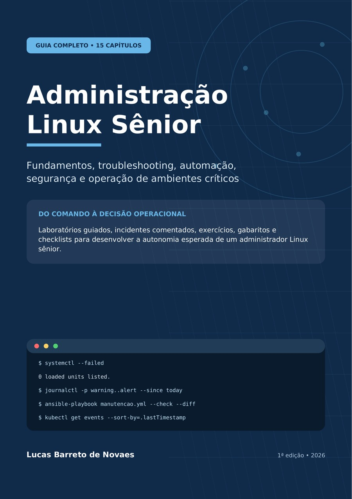

01
Diagnóstico estruturado
Diferencie CPU, memória, I/O, rede, kernel, serviço e aplicação antes de escolher a intervenção.
Ebook técnico • versão 1.1 revisada
Um guia completo para diagnosticar problemas, controlar riscos, automatizar rotinas e conduzir ambientes Linux críticos com método, evidências e decisões reversíveis.
Produto digital em PDF. Pagamento e entrega configurados pela Kiwify.

O diferencial real
É conseguir receber um ambiente desconhecido, localizar a camada que falhou, provar a causa, controlar o impacto da correção e impedir a recorrência.
$ observar --antes-de-alterar
$ formular-hipotese --com-evidencias
$ mudar --canario --rollback
$ validar --servico --negocio
$ documentar --prevenir-recorrencia
Do sintoma à causa
Cada tema conecta fundamentos, comandos de leitura, riscos de produção, laboratório, cenário de incidente e checklist de domínio.
Diferencie CPU, memória, I/O, rede, kernel, serviço e aplicação antes de escolher a intervenção.
Trabalhe com pré-check, canário, condição de abortagem, rollback e pós-check funcional.
Construa scripts idempotentes, auditáveis, reentrantes e seguros para executar em escala.
Separe fato, hipótese, impacto, decisão, risco e próximo marco em incidentes e mudanças.
Competências desenvolvidas
Da inicialização do sistema ao troubleshooting de aplicações, containers, clusters e cloud.
Boot, kernel, processos, sinais, serviços, dependências, limites, cgroups e recuperação.
LVM, XFS, ext4, inodes, NFS, iSCSI, multipath, expansão e diagnóstico de latência.
Rotas, DNS, TCP, MTU, TLS, firewall, SSH, sudo, SELinux, auditoria e hardening.
Bash robusto, dry-run, logs, validações, Ansible, idempotência e mudanças em escala.
CPU, memória, swap, I/O, rede, PSI, métricas, logs, alertas e capacity planning.
Containers, pods, alta disponibilidade, continuidade, JVM, middleware, incidentes e carreira.
Conteúdo programático
Abra cada parte para consultar os temas abordados.
Kernel, user space, boot, hierarquia, identidade, pacotes, bibliotecas, /proc, /sys e limites.
Método de troubleshooting, evidências, CPU, memória, disco, rede, OOM e processos bloqueados.
Estados, sinais, prioridades, units, targets, timers, sockets, dependências e hardening.
Discos, LVM, XFS, ext4, inodes, expansão segura, NFS, iSCSI e multipath.
Interfaces, rotas, DNS, TCP/UDP, firewall, TLS, MTU, bonding, namespaces e tcpdump.
Identidade, SSH, sudo, SELinux, firewall, patches, auditoria, certificados e segredos.
Tratamento de erros, dry-run, idempotência, inventários, handlers, CI e rollback.
Utilização, saturação, latência, CPU, memória, I/O, rede, cgroups, NUMA e PSI.
journald, rsyslog, rotação, métricas, traces, correlação temporal e alertas acionáveis.
RPO, RTO, consistência, snapshots, retenção, restore, testes e documentação de DR.
Failover, quorum, fencing, VIP, health checks, replicação, split-brain e Pacemaker.
VMs, namespaces, cgroups, imagens, volumes, redes, pods, requests, limits e probes.
JVM, threads, WebLogic, JBoss, Tomcat, proxies, TLS, pools, banco e mensageria.
Severidade, triagem, timeline, contenção, RCA, mudança atômica, rollback e runbooks.
Clareza, mentoria, decisões, influência, documentação, portfólio e plano de evolução.
Metodologia didática
Comece pelas camadas, dependências e comportamento esperado do sistema.
Use comandos de observação e interprete saídas, estados, métricas e logs.
Pratique em ambiente descartável com pré-requisitos, validação e limpeza.
Trabalhe o incidente, responda exercícios e produza checklists e runbooks.
Para quem é
Acesso ao conteúdo completo
Estude no seu ritmo, reproduza os laboratórios e use os checklists como roteiro de evolução técnica.
Você será encaminhado ao checkout seguro configurado na Kiwify.
Perguntas frequentes
É um ebook digital em PDF, com 174 páginas, sumário clicável e marcadores de navegação.
O livro explica fundamentos, mas é mais bem aproveitado por quem já teve contato com terminal, servidores ou aplicações Linux. O conteúdo avança até troubleshooting, automação, alta disponibilidade, Kubernetes e liderança técnica.
Não. Os laboratórios devem ser feitos em VM ou ambiente descartável. Em produção, qualquer alteração exige autorização, análise de impacto, backup, rollback e validação.
Os conceitos são aplicáveis a ambientes corporativos Linux. Quando nomes de serviços, ferramentas ou caminhos variam entre distribuições, o texto orienta a validar a documentação e o contexto local.
Não. Senioridade exige prática, responsabilidade, exposição a situações reais, comunicação e comportamento consistente. O ebook oferece um mapa completo, laboratórios e critérios para desenvolver e demonstrar essas competências.
Após a confirmação do pagamento, o acesso é liberado conforme a entrega configurada no produto da Kiwify. Em caso de dúvida, utilize o canal informado no checkout.
Próximo passo
Comece uma trilha prática para diagnosticar, operar, automatizar e melhorar ambientes Linux com mais segurança e autonomia.
Quero o Administração Linux Sênior